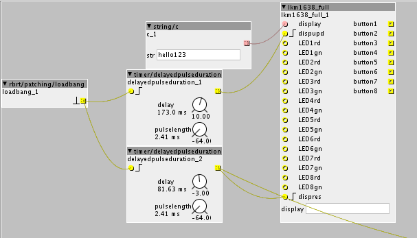

Don't think that will be possible. These board use the SPI protocol for communication. On the Axoloti, this protocol is implemented using the 4 gpio I've used here.
Connecting the LKM1638 board
Mindsetup
#22
Okay, so not possible to use to of these chips. I might have to do an 8 step sequencer then. Or find some hacky way to use the 8 as 16. Or maybe its easy to just patch so i can have 16 step pattern i can browse with the 8 steps.
Thanks for your help. I had a year long pause from axoloti and now excited again to find some time to create something awesome.
Have you continued making the guide btw?
AndrewChi
#23
Hi @aslanov,
Thanks so much for your object and @janvantomme for the original ones.
I found a very simple solution for the update display problem:
I used a pulse/lfsburst4 object to trigger the update input and it works. No cpu spikes whatsoever!
I guess 'normal' triggers were too long...
Has anyone experienced that LED 8 is lighting up when sending update display messages?
My LKM board is slightly different (also very cheap and only red LEDs). I guess it's the board's design? Or could I perhaps change something in the code to change this behaviour? I'm just starting out with code so any help/insight would be really great! Thanks.
AndrewChi
#24
Okay, I was a bit fast...
When the patch became a bit more complex it didnt work anymore with the pulse object as described above.
I figured out the CPU spike when updating the display was actually caused by the Sleep command in the code.
I commented out all chThdSleepMilliseconds in the //update text in the K-rate code of the object.
I now use a timer/delayed pulse object to update the display to keep the update rate slow, and this seems to work, when the delay is set above 100ms.
Could maybe be of help for someone who is experimenting with the LKM board too.
Happy patching!
kaos
#25
HI I just hooked up my LKM1638 board I had lying around to my axo. It randomly crashes, sometimes before I update the text on the display. I'm using the adaptations @AndrewChi suggested.
{kind=link}
I'm trying to have it display the current patchname and would love to have the buttons switch presets inside each patch.
I succeed sometimes in switching patch, sometimes it updates the name, sometimes not.
The AXO log just says
"Disconnect request"
and the axo becomes unresponsive until reset

I tried adding various delays, pulselengths etc... all crashes.
Even if I do not "use" the object, but just let it sit in the patch, it crashes, also when completely unconnected.
When I remove the object all is fine...
I'm using the lkm1638_full but I've had similar problems with the other object, and in that case axo was also logging some other SPI related errors, like:
> Error: object "spi.begin_1" attribute "clock_polarity", value "0 when idle" unmatched > Error: object "spi.begin_1" attribute "clock_phase", value "first clock transition is the first data capture edge" unmatched
not in the case of lkm1638_full
any hints?
kaos
#26
my gut feeling says the board needs a "reset" or a "clear" either before a new patch load trigger is sent or as a reset before running any of the LKM1638 object code.
the reason that I think it is this is that I can always run a patch the first time it loads. This is the only reproducable pattern I can find...
so:
1. reset axo (usb cable out/in) flash patch running has got nothing to do with LKM1638
2. load a patch setting the display using @janvantomme's lkm1638-display-toggle-leds
3. display shows nothing, is outlined above as a possible bug, the rest of the patch works fine
4. loading the
script, suddenly my text set in the previous patch pops up. This explains something is kept on the lkm1638 and transferred between patches, but it should be reset!
5. the patch works fine (buttons toggle LEDS, I can set them using the seq objects, but it should not display anything on the 7-segment display, yet it displays text from the first patch
6. load the first patch again.... no problem, I can switch back and forth between these two patches no problem at all
6. if I load another patch with different text in the lkm1638-display-toggle-leds it crashes sometime, sometimes not... it becomes unstable...but it will crash after 2 or 3 display updates the latest
janvantomme
#27
Just looked at the patches I used on my synth. I have a patch bank with a startup patch that contains the axoloti/axoloti/blob/master/archive/tests/io/spi_lkm1638.axh script object and SPI config. The patches I use for playing the synth with my objects are loaded with the patch/load i object.
As far as I can remember, the display object was not made to update frequently. I only use it to show the patch name when it becomes active.
kaos
#28
I used the exact same strategy...You never had crashes?
I only update the name/display on patch load, making sure I cannot really quickly load another patch (eg. by accidentaly not debouncing my switch)
janvantomme
#29
It's been a while since I've used the board. Think I did have some crashes during development, but that's was a long time ago.
I also have the SPI errors in the console when opening patches with my objects. Not sure how to fix those, as the firmware is not documented that well.
The original patch by Johannes is based on some code from a Raspberry Pi library, but don't know if it was really optimised to run on Axoloti. It was mainly a quick example on how to use SPI.